Use Smasher again? That's why you're nub LMAO ---by SU-152

-SU-クランにようこそ！
-SU-クランとは，世紀末_wotbによって創設された駆逐戦車を愛するプレイヤーが集うクランです．各々の愛車で Rank50の達成や，月間勝率・WN8の向上，優等マークの取得を目指しつつ「戦場における駆逐戦車のあり方」を日々探求しています．
我々はSmasherのような，誰もが認めるOP戦車には興味がありません．駆逐戦車に乗り，そうしたOP戦車を蹴散らすこと……これこそが私たちの美学です．この美学に共感する仲間をお待ちしております．-SU-クランblitzstars: https://www.blitzstars.com/clan/asia/107533
-SU-クラン & 視聴者交流Discord
-SU-クランでは，Discordにて交流サーバーを開放しています．
雑談や質問はもちろん，wotbの課金情報・ゲーム内最新情報，駆逐戦車に関する解説など，
世紀末_wotbのファンでなくとも楽しめる，居心地の良いサーバーです．
興味のある方は，ぜひ気軽にご参加下さい！
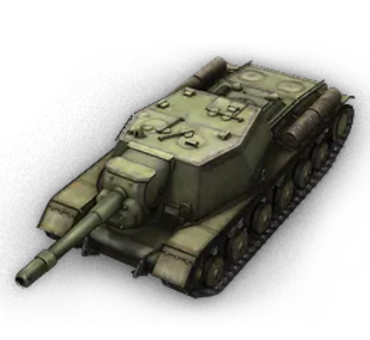 -SU-クラン 募集要項
加入条件
- お気に入りのTier7以上の駆逐戦車(TD)があり，その戦車だけで以下を満たしていること：
- ランク50を達成している
- 月間WN8：2450以上
- 月間WN8アジア10位以内
- 月間勝率：60%以上
- 優等マーク：1優等以上(優等未実装Tierは不要)
- 全体戦績として以下を満たしていること
- 月間勝率：60%以上
- 月間WN8：2000(Great)以上
- 戦闘数：5000戦以上
- ※以下の項目により，条件を満たしていなくても加入が認められる場合があります．
- -SU-メンバーから推薦があった時
- ランク50を達成していないが，達成する見込みがある時
- 愛車がTier7未満であっても，Tier7以上の戦績が十分に良い時
- 世紀末_wotbと交流があり，世紀末_wotbが「この人なら良いか」とやや偏った判断をした時
- 世紀末_wotbと交流があり，TBオフシーズン時のみ籍を置きたい等の一時的な加入である時
※あくまで条件は目安ですので，少しでも興味のある方はお気軽にご連絡ください．状況に応じて条件を緩和・免除する場合もございます．
福利厚生
-SU-クランメンバーは以下の恩恵を受けられます．
- -SU-メンバーとの個性的な小隊を楽しめる ※メンバーは皆勝率6割以上であるため，勝率が盛れます
- 別ゲー・受験などを理由とした休暇制度（無期限）
- 交流のあるクランへの転部サポート制度
- Discordにて，メンバーそれぞれに個性的なロールが付与

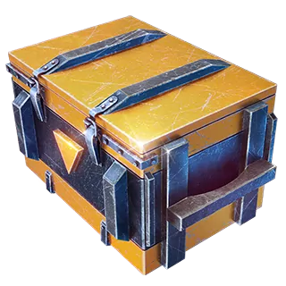 注意事項
- トーナメント参加やクランイベントは一切行っておりません．申し訳ございません．
- ウィークリークランミッションの達成率は低めです．クランミッション報酬には期待しないでください．
- ランク50はあくまで通過点として捉えてください．
- 無断加入申請には対応していません．→ 必ず事前に世紀末_wotbに連絡をお願いします．
- SNSなどで迷惑行為・炎上行為が確認され，-SU-クランに風評被害が及んだ場合は除名処分となる場合があります
応募方法
以下のいずれかの方法で世紀末_wotbに連絡を取り，自由にご応募ください．
(推奨)Discordで応募
→ 世紀末_wotbのDiscordサーバー に参加し，フレンド追加後，DMにてメッセージを送信
X（旧Twitter）DMで応募
→ 世紀末_wotbのXアカウント にメッセージを送信
YouTubeで応募
→ 世紀末_wotbのYouTubeチャンネル の任意の動画や投稿のコメント欄にてメッセージを送信
-SU-クランメンバー紹介
|
|
Bako_Hayato ISU-130 / SDP wz66 Grom すこん部．前線型駆逐が得意．しっかり絞らず弾を撃つため，世紀末に「(弾を)バコバコ外すハヤト」と呼ばれた事がIGN「バコハヤト」の由来．SafetyZoneさんに「バカハヤト」と呼び間違えられた事を，メンバーから永遠にイジられている． |
| 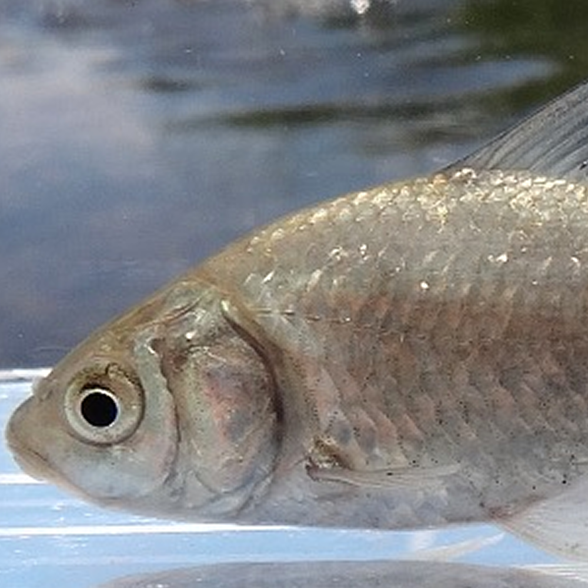 |
funafuna27 Vindicator Ultramarines 優しいお兄さんでもあり，俯角2度ブルドーザーお兄さんでもある．ミノタウロに1日130戦乗ったり，Minecraftで巨大な地上絵を作ったりするなど，凄まじい根性の持ち主．なぜフナのアイコンなのかは不明． |
|
himazin2525 Jagdpanther II 通称「エリザベス」．VCでの生声が怖すぎるためヤクザベスとも呼ばれている．JagdpantherIIで平均ダメ3300を達成する程の実力者．しかしwotbに萎えるのが早く，一日数試合プレイするのが限界．1万戦未満のプレイ数でありながら，「wotbは他人のプレイを見るのが一番楽しい」という神髄を既に理解している． |
|
|
|
MTAKA195 SU-152 / Waffen 1.0 / T49 Fearless 味方運がなく「もーうんこー」と嘆く悲しきblitzer．エリザベスと小隊をし，二人でキレ散らかすのがクランの名物となっている．駆逐だけでなく他の車種も上手いため， |
|
HarrisonLSF Helsing 特に極めている駆逐は無いものの，4割時代の世紀末を支えた海外ニキとして加入．何世代も前のMacbookを使っているが買い替える予定はなく，「パソコンが壊れたら引退するよbro」と宣言している香港人． |
|
| 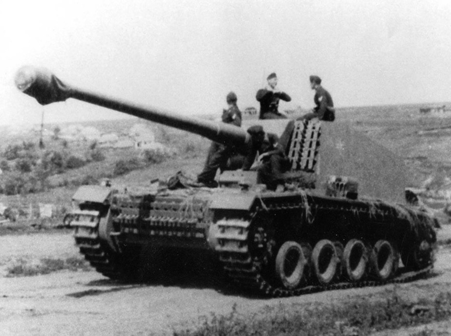 |
M1128_Stryker St. Emil 3つのアカウント全てでSt.Emilランク50を達成し，かつアジアランキング1位〜3位を独占したSt.Emilの神．単発が上振れると喜ぶが，下振れるとWGへの殺意を露わにする．本家WoTでもSt.Emilで3優等を保持しており，St.Emilの何が彼をここまでさせているのかは不明． |
| 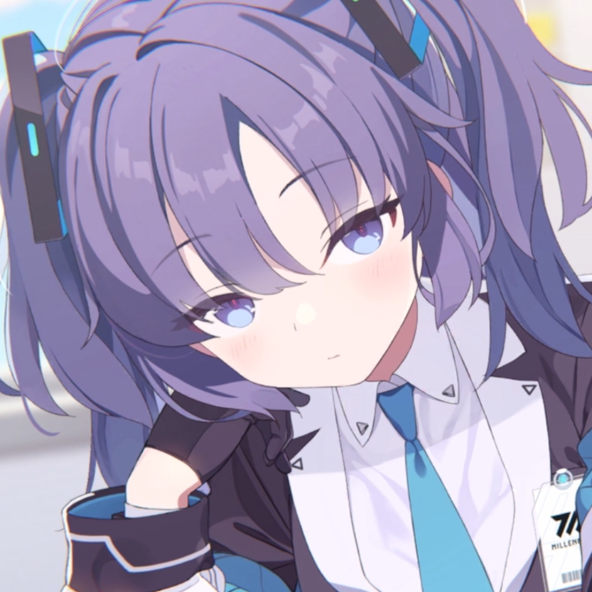 |
I_love_Hoshino T30 在籍していたクランから蹴られた所を「アイコンが可愛い」という理由で世紀末がスカウト．読み上げbotの声も(なぜか)可愛いので，-SU-メンバーにも可愛がられている．"SukeMAX"という自分のIGNを「すけべまっくす」と自分からネタにしたため，他人からイジられても何も言い返せなくなってしまった． |
| 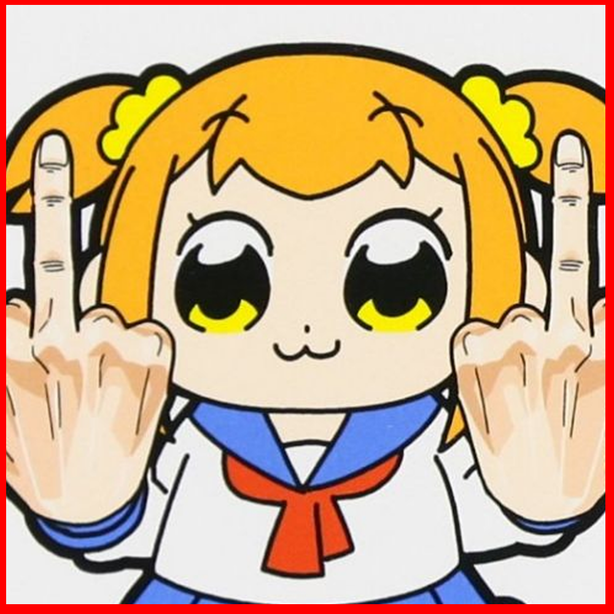 |
Violet_Evangelion FV215b(183) 通称「ポプ子」．Tier10で暴れ回り，トーナメントシーズンで出張するアクティブプレイヤー．声優である花澤香菜の話を振ると，セリフ詠唱が止まらなくなる...なにも終わっちゃいない！なにも終わっちゃいないんだ！！アタイにとって戦争は続いたままなんだ！自分の金で買った好きな洋服をdisられている！SNS上ではクソダサいだのみんな好き放題に言いやがる！あいつら、なんなんだ！！何も知らないくせに！！！ |
|
HAA_Br0Crusher2000 SU-152 海外ニキ．大学院生＆就活のため，最近は殆どログイン出来ていないが，実はクラン創設時から加入している古参勢．SU-152の他，Obj268やISU152などソ連駆逐全般が好きな模様． |
|
| 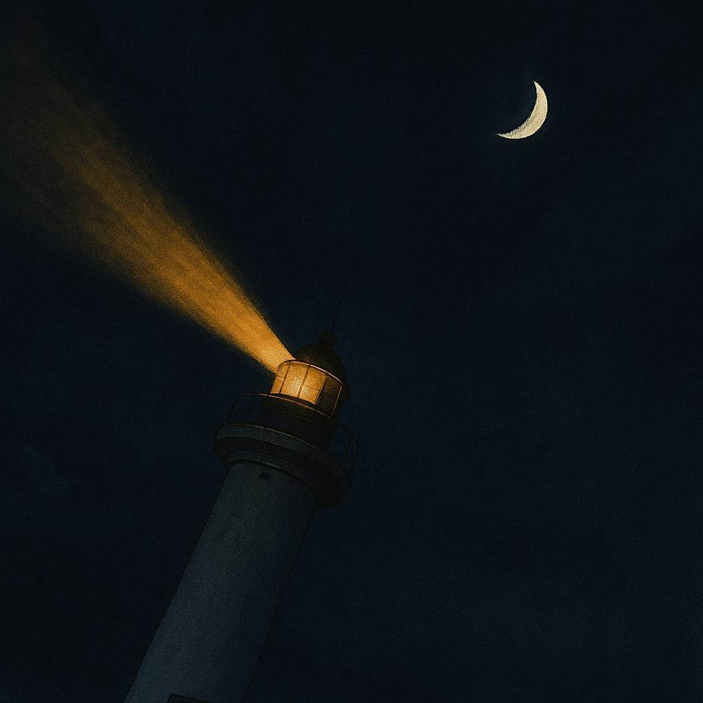 |
EtaDreamer ChiRi かつてはCATS所属のガチ勢だったが，大学生になってからはエンジョイ勢へ転向．バイト代をwotbに課金し，きまぐれでギフトを送る．彼が送って来たギフトは必ず車両が出るという謎のジンクスがある． |
| 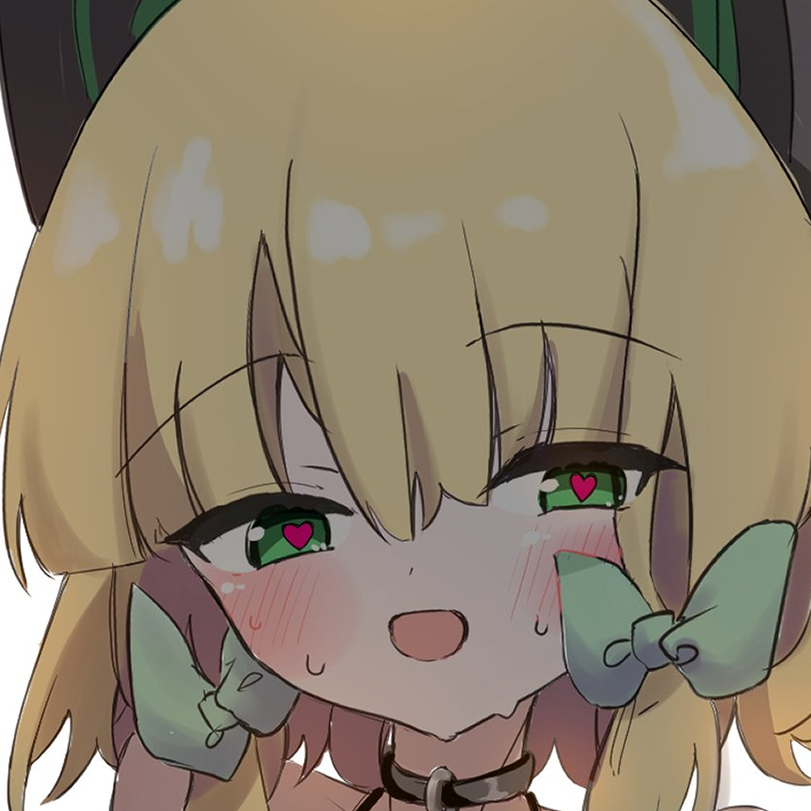 |
OODIN_iron Object 263 DAZEさんと呼ばれている若きメンバー．なぜかアカウントにログイン出来なくなり数か月隠居していたが，突如復帰．しかしその直後，VRChatというメンヘラホモボーイの奥地へ旅立ち，以後彼をDiscordで見かける者はいない． |
| 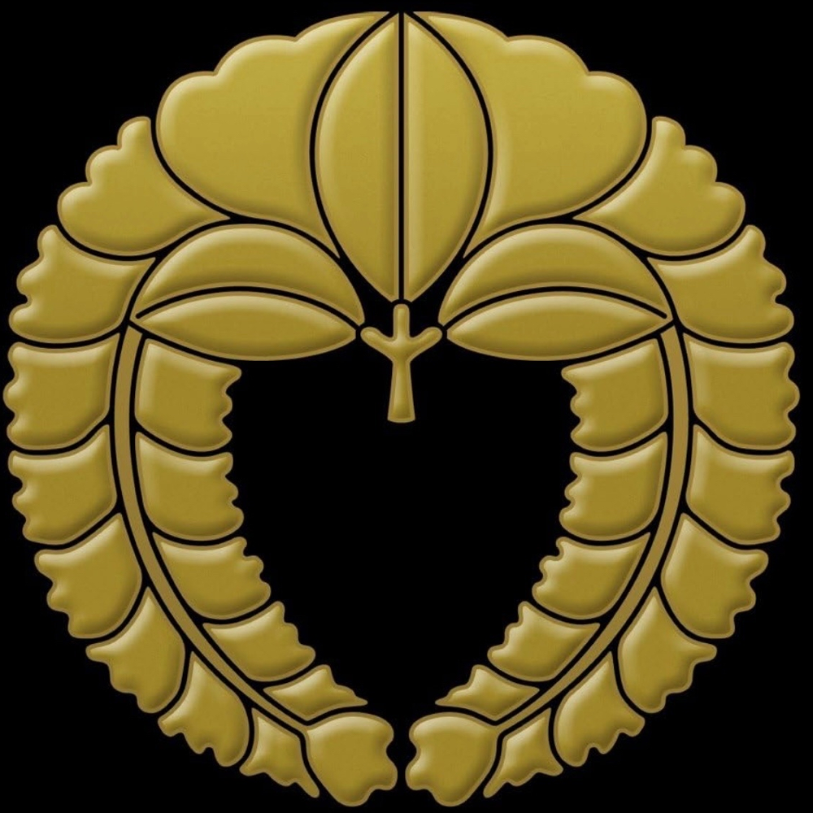 |
SU_152_only SU-152 名の通りSU-152にしか乗らない（ISU-152にもちゃっかり乗る）プレイヤー．実はクラン最年長であり，クランを温かく見守る存在である． |
| 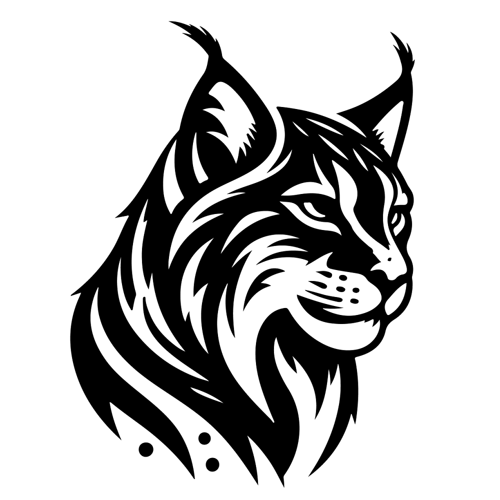 |
luchs_II E25 E25の達人．多目的レストアパック以外の2つの消耗品枠を「改エンブ」「通常エンブ」で固め，更に常備品も燃料2つ搭載するダブルエンブ教団の祖．軽戦車での経験に加え，各マップの特殊ポジを研究し尽くしており，唯一無二の立ち回りを実現する． 正直アドレナリンやタングステンを差し置いて，普通エンブを積むメリットはないだろう．これは消耗品を積んでいるわけではない．LT乗りとしての覚悟と意思表明である．つまり思想を積んでいるのだ．実は「戦車をトレモで吹っ飛ばすバグ」が本職． Youtube |
| 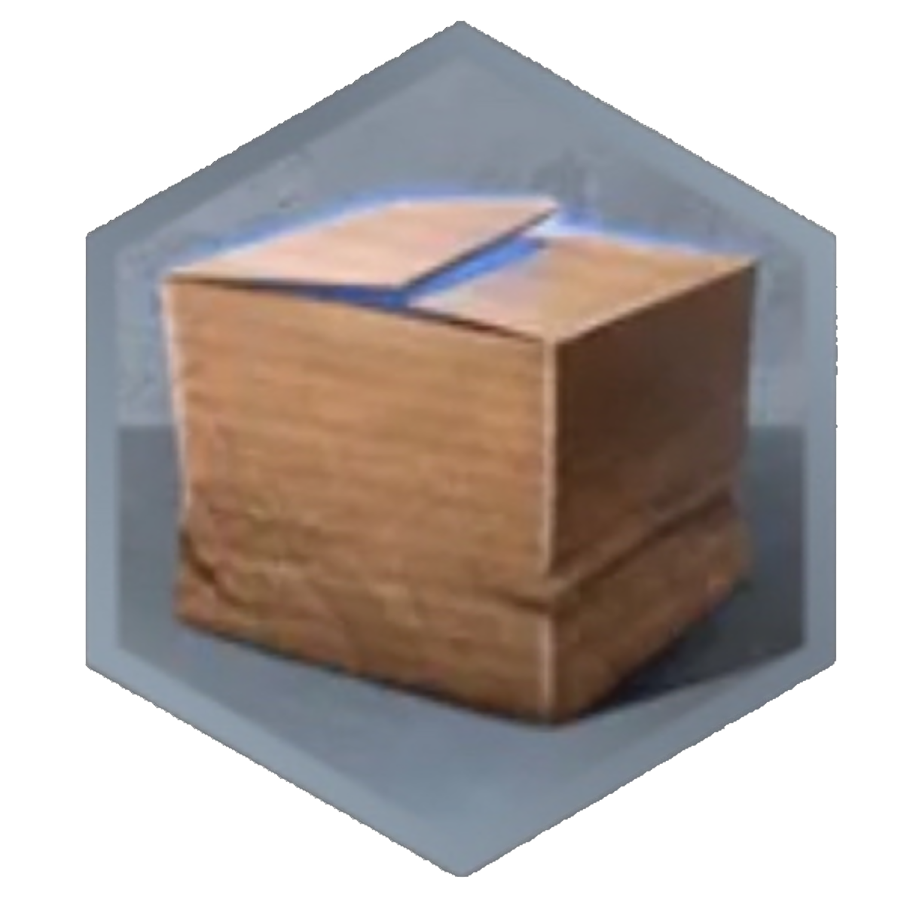 |
Anisaki_su SU-152 / T25/2 / Caliban 若手YouTuber．wotbのセンスが抜群で，アジアランク1位を次々と奪取した怪物新人．クランに入る前はWN8: 2100程度であったが，現在はなんと3600である．Calibanを「快感も得られるし精神とプレイスキルも磨ける最高の戦車」と評価していたが，翌日に撤回した． Youtube |
|
Sorry_Im_Nub SU-152 / E25 / AMX CDA 105 / GSOR1008 / FV215b(183) 世紀末_wotb. 駆逐狂いが集うクランを作りたい思いから -SU- を創設した全ての元凶．理想通りのクランが出来て満足しているが，唯一の気がかりは，メンバーから「SU-152の人」ではなく「ロリコン淫夢厨」と認知されている事である．Youtube |
|
| 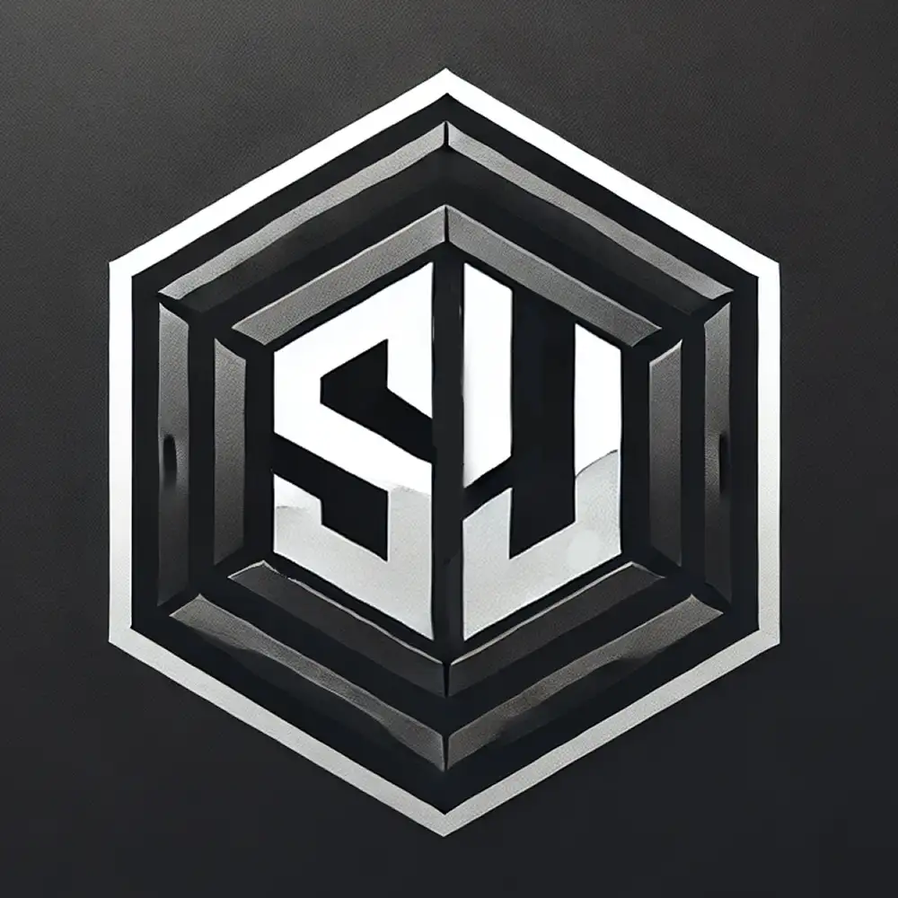 |
FK_Smasher SU-152 クランマスター．中身は世紀末_wotbであり，ただ -SU- に鎮座している．OPに乗ってばかりの野郎共を駆逐するという，クランの理念を表したようなIGNをしている． |
裏話
- -SU-クラン内に上手いプレイヤーが増えており，世紀末氏がキャリーされる側になってきている．実はこの人
ロリコン淫夢厨だし要らないのでは...？とクーデターが起きそうで起きていない．